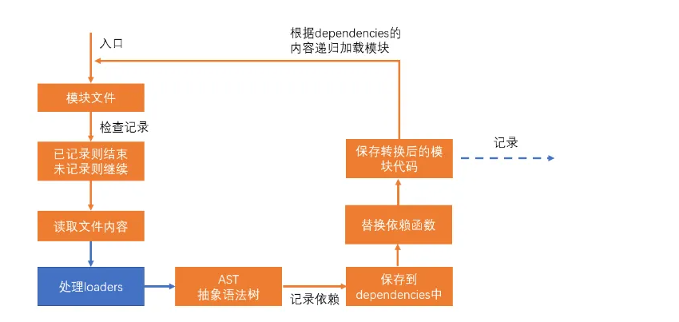

事件循环（运行机制）
事件循环是浏览器渲染主线程的工作方式，每次循环从消息队列中取出第⼀个任务执行，当然代码在执行过程中，会遇到⼀些无法立即处理的任务（网络请求，I/O 操作，计时器等），主线程将任务交给其他线程去处理，自身立即结束任务的执行，转而执行后续代码。当其他线程完成时，将事先传递的回调函数包装成任务，加⼊到消息队列的末尾排队，等待主线程调度执行。每个任务有不同的类型，同类型的任务必须在同⼀个队列，不同的任务可以属于不同的队列。不同任务队列有不同的优先级，在⼀次事件循环中，由浏览器⾃行决定取哪⼀个队列的任务。但浏览器必须有⼀个微队列，微队列的任务⼀定具有最⾼的优先级，必须优先调度执行。
浏览器一个页面会有一个进程，然后一个页面中进程中会有一个渲染主线程
js 是运行在渲染主线程的。这才是导致 js 是单线程的原因
队列：计时队列，交互队列，渲染队列，微任务队列
在浏览器地址栏输入地址，并按下回车键后，发生了哪些事情？
- 浏览器自动补全协议、端口，完成 url 编码
- 浏览器根据 url 地址查找本地缓存，根据缓存规则看是否命中缓存，若命中缓存则直接使用缓存，不再发出请求
- 通过 DNS 解析找到服务器的 IP 地址
- 浏览器向服务器发出建立 TCP 连接的申请，完成三次握手后，连接通道建立
- 若使用了 HTTPS 协议，则还会进行 SSL 握手，建立加密信道。
- 浏览器决定要附带哪些 cookie 到请求头中
- 浏览器自动设置好请求头、协议版本、cookie，发出 GET 请求
- 服务器处理请求，进入后端处理流程。完成处理后，服务器响应一个 HTTP 报文给浏览器。
- 浏览器根据使用的协议版本，以及 Connection 字段的约定，决定是否要保留 TCP 连接。
- 浏览器根据响应状态码决定如何处理这一次响应
- 浏览器根据响应头中的 Content-Type 字段识别响应类型，如果是 text/html，则对响应体的内容进行 HTML 解析，否则做其他处理
- 浏览器根据响应头的其他内容完成缓存、cookie 的设置
- 浏览器开始从上到下解析 HTML，若遇到外部资源链接，则进一步请求资源
- 解析过程中生成 DOM 树、CSSOM 树，然后一边生成，一边把二者合并为渲染树（rendering tree），随后对渲染树中的每个节点计算位置和大小（reflow），最后把每个节点利用 GPU 绘制到屏幕（repaint）
- 在解析过程中还会触发一系列的事件，当 DOM 树完成后会触发 DOMContentLoaded 事件，当所有资源加载完毕后会触发 load 事件
浏览器的渲染原理
1.解析 dom 树和 cssom 树(预解析线程下载外部的 css 文件和 js 文件)，最终解析两棵树
2.样式计算（经历 css 属性值的计算过程【单位转化和层叠】），生成带样式的 dom 树
3.布局，生成布局树【计算盒子大小和页面上 x,y，伪元素，隐藏元素】
4.分层【z-index】
5.绘制【生成绘制指令，类似 canvas】
6.分块—合成线程
7.光栅化 –gpu 进程 将块变成位图
8.画 真正的展示
浏览器缓存
发送 http 请求之后，先看本地有没有缓存，如果有就直接使用，没有再发送，发送接收到数据以后，根据响应头保存数据。当有一天过期的时候，再发起协商缓存，如果服务器响应 304 就继续使用。现在基本都会把文件的本地缓存时间设置的很长，因为由于工程化，上传的文件都是 hash 文件，只要有变动就会请求新的地址
Cache-Control：max-age=3600（缓存方式）
ETag: W/“121-171ca289ebf”（资源编号）
Date：Thu, 30 Apr 2020 12:39:56 GMT（响应时间）
Last-Modified：Thu, 30 Apr 2020 08:16:31 GMT（资源最后一次修改时间）
如果缓存过期，携带这两个头文件，再次询问服务器，这个资源能否接着使用
If-Modified-Since: 资源最后一次修改时间
If-None-Match: 资源编号
讲讲三次握手与四次挥手
这个事情发生的在网络的传输层,在 tcp 连接上
主要目的是保证发送和请求的顺序
握手过程：
浏览器———>syn=1——–>服务器
服务器——–>ack=1———>浏览器
浏览器——–>ack=1———>服务器
ack 表示确认
挥手过程：
浏览器——–>fin=1——>服务器
服务器——->ack=1——>浏览器
服务器——->ack=1 fin=1——>浏览器
浏览器—–>ack=1——->服务器
http 和 https
HTTPS 是建立在 SSL 协议之上的 HTTP 协议
如果没有第三方机构(ca)，那么你收到的信息可能会被篡改(中间人攻击)
我们交给第三方机构：钱+要认证的域名+一个公钥（服务器生成的）
服务器花钱去买一个证书
第三方机构给我们一个证书包括：域名+证书颁发机构+加密的你发给他的公钥信息（私钥加密)+加密的证书签名（私钥加密）
由于公钥全世界有所以我就用公钥解密，一旦被篡改，公钥就解密不了
服务器由于有证书了，于是客户端通信的时候，把这个证书交给客户端（客户端验证一下）
用服务器的公钥进行加密进行传输一个密钥，后续就用这个密钥传输
作用域链
作用域在定义时就确定，并且不会改变
当在函数作用域操作一个变量时，它会先在自身作用域中寻找，如果有就直接使用
如果没有则向上一级作用域中寻找，直到找到全局作用域，如果使用了上级的作用域则形成了闭包
垃圾回收
浏览器会被不被使用的变量自动进行清理【清理的时机是异步的】
一般现在使用的原理是标记清除
闭包
闭包 = 执行函数 + 词法作用域
执行函数时，只要在函数中使用了外部的数据，就创建了闭包。作用域链是实现闭包的手段。
闭包让开发者可以从内部函数访问外部函数的作用域。闭包会随着函数的创建而被同时创建。
闭包可以防止内部的变量污染全局
闭包内存泄漏：
词法作用域会膨胀
function test() {
let a;
let b;
function sub() {
a;
}
function sub2() {
b;
}
return sub;
}
虽然只用到了 sub 与 a，但是 b 变量的由于跟 a 在同一个词法作用域，所以他也不会销毁
原型链
原型的作用就是要保证对象的类型可溯
每个函数都会自动附带一个属性prototype，这个属性的值是一个普通对象，称之为原型对象
每个对象都会自动附带一个属性proto，这个属性的值是一个普通对象，称之为实例对象
当我们访问对象的一个属性或方法时，它会先在对象自身中寻找，如果有则直接使用， 如果没有则会去原型对象中寻找，如果找到则直接使用,于是就这样一直找下去，也就是我们平时所说的原型链的概念。
继承
组合继承
1.继承构造方法
2.继承原型
function Parent(name) { this.name = name; } Parent.prototype.sayName = function
() { console.log(this.name); }; function Child(name) { Parent.call(this, name);
} Child.prototype = new Parent(); Child.prototype.constructor = Child;
es6 extends 继承(本质也是用这种方式)
模块化
目的
不污染全局变量
保证依赖的顺序
细分与复用代码
common.js 和 es module 的区别
1.动态与静态
静态可以进行 tree shaking
- 值
CommonJs 导出值是拷贝，可以修改导出的值，Es Module 导出的是引用值，并且值都是只读的，不能修改
Es Module 有符号绑定【共享一块内存地址】
3.标准不同
一个社区规范，一个官方模块化标准
Promise async
promise 解决的问题：
1.回调地狱
2.统一了异步模型
有了 Promise，异步任务就有了一种统一的处理方式，解决了回调地狱，统一了异步模型
每一个异步任务，都是一个 promise 对象（两个阶段、三个状态）
then 方法必定会返回一个新的 Promise,可理解为后续处理也是一个任务
新任务的状态取决于前一个任务的后续处理（因为 then 方法是没有 resolve 和 reject，所以他会有自己的规则）
- 若前一个任务没有相关的后续处理，新任务的状态和前任务一致，数据为前任务的数据
- 若前一个任务有后续处理但还未执行，新任务挂起。
- 若前一个任务后续处理执行了，则根据后续处理的情况确定新任务的状态
* 后续处理执行无错，新任务的状态为完成，数据为后续处理的返回值
* 后续处理执行有错，新任务的状态为失败，数据为异常对象
* 后续执行后返回的是一个任务对象(promise)，新任务的状态和数据与该任务对象一致
async 关键字用于修饰函数，被它修饰的函数，一定返回一个新的 Promise,如果返回的是值，则会包装成 promise。
webpack
webpack 是基于模块化的打包（构建）工具，它把一切视为模块（图片,css 等）
编译过程
- 初始化【形成一个最终的配置对象】
- 编译
根据入口创建 chunk,转化 loader,转化为抽象语法树，分析依赖（转化代码,webpck_require）【chunk】
放入执行模板中（立即执行函数）【bundle】
- 输出
利用 fs 模块将内存中的数据写入文件
loader
loader 本质上是一个函数，它的作用是将某个源码字符串转换成另一个源码字符串返回
如果要执行多个规则，从后向前执行

postcss-loader 处理 css 兼容性
babel-loader 处理 js 兼容性
file-loader 生成依赖文件到输出目录
plugin
当 webpack xxx 时，就 xxx。
有各种各样的钩子，可以在各个时机做事
class MyPlugin{ apply(compiler){ //这里一次启动只会运行一次 类型window.onload
//name是用来调试的，随便填写 compiler.hooks.事件名称.事件类型(name,
function(compilation){ //事件处理函数 }) } }
copy-webpack-plugin（复制静态资源）
mini-css-extract-plugin（生成 css 文件）
vite
依赖预构建
第三方模块会进行依赖预构建
解决的问题：
不同的第三方包会有不同的导出格式
对路径的处理上可以直接使用.vite/deps, 方便路径重写
叫做网络多包传输的性能问题(也是原生 esmodule 规范不敢支持 node_modules 的原因之一), 有了依赖预构建以后无论他有多少的额外 export 和 import, vite 都会尽可能的将他们进行集成最后只生成一个或者几个模块
开发阶段
es build 打包进行依赖预构建,而且还会进行缓存,es build 打包速度快
打包阶段
rollup 打包
插件
vue(), VueSetupExtend(), AutoImport({ resolvers: [ElementPlusResolver()] }),
Components({ resolvers: [ ElementPlusResolver({ importStyle: "sass", }),
IconsResolver({ prefix: "icon", alias: { antd: "ant-design", // iconify
图标集合名称过长可设置别名 https://icon-sets.iconify.design/ant-design/ ven:
"ven-icon" }, customCollections: ["ven-icon"], //
使用自定义本地图标需要定义集合名称 }) ] }),
优化问题
构造性能
webpack
1.设置不需要解析的模块
2.cache-loader 缓存
3.热更新
4.开发阶段不计算文件 hash
传输性能
分包（split-chunk）
tree-shaking
terser 代码压缩
gzip 压缩
cdn
懒加载
NDS 解析优化
其他
webpack scope hoisting
webpack 内置优化，减少执行上下文，合并函数
webpack-bundle-analyzer
分析打包体积
speed-measure-webpack-plugin
分析打包耗时
rollup-plugin-visualizer
分析打包体积
rollup-plugin-visualizer
用来分析各文件的编译结果
项目难点亮点
请求库
之前对 lib 库参与过封装请求，这里面还是相对复杂的，我们公司希望能有一个通用库，对一些重复请求，请求缓存，有些串行等进行封装，同样也是给大文件上传打下了很好的基础。这个库分为三层，一层是 base 层，里面会注册一些发送前和得到请求后的钩子，会注册一些权鉴的 token 携带，会对请求的地址和超时时间进行封装，中间有 core 层然后可以对串行请求，重复请求，缓存请求进行操作。最上层就是业务请求层，由于请求的接口很多，很多都是重复代码，于是我写了一个脚本，在 api fox 里面先把接口的参数是否缓存之类的全部定义好，然后导出成 json 格式，然后根据 json 格式去生成代码，当然有些代码可能还需要再次修改，也可以进行打补丁。当然中间由于缓存的地方很多，于是可以运用依赖倒置原则由上层来决定存储位置
大文件上传
把大文件分片上传需要有各种各样的协议，创建文件的协议，服务器给一个 token 标识，hash 校验协议，如果没有这个分片再发送，上传文件碎片协议，最后碎片上次完毕合并协议。中间用到了发布订阅模式，用来监控上传的进度，中间还用到了并发请求控制。
动态路由
将 views 下的所有 vue 文件生成路由，当然需要补充 meta 数据，其他的依靠 import.meta.glob 读到所有路径和组件，然后还有嵌套路由，需要一级一级展开。其他还有一些细节，比如有些 vue 文件不需要生成路由，有一些层级嵌套等。这样的好处是不用写一个文件就重复些路由了。同时右边菜单运用 el-menu 同时递归有子路由的地方，这样就可以要有的页面的时候只需要写 vue 即可
封装动态表单
就是表单项之间是有关联的，上一项的选择会决定下一项如何去显示
思路：把一个表单项就看成是一个对象，对象里面就是表单的配置，然后把这一个个对象形成一个链表结构，对象里面加一个 next(当前选择，之前的选择)函数，调用得到下一项是什么。
然后当在页面中选择一项后，就会自动调用 next，next 函数返回的是一个组件
权限控制指令
app.directive('permiss', { mounted(el, binding) { if
(!permiss.key.includes(String(binding.value))) { el['hidden'] = true; } }, });
后台系统有权限控制，于是封装了指令，用在 el-menu 上
resize 指令
将监听的 dom 放入 weakMap，当后面尺寸变化的时候执行传进来的函数
const map = new WeakMap(); const ob = new ResizeObserver((entries)=>{ for(const
entry of entries){ const handler = map.get(entry.target); handler &&
handler(entry.contentRect) } //dom尺寸发生变化后，运行这里面的函数 }) export
default{ mounted(el,binding){ ob.observe(el) map.set(el,binding.value) },
unmounted(el){ ob.unobserve(el) } }
图片懒加载
1.判断视口
2.Intersectionobserver
封装方法如上
白屏优化
首页元素太多
思路：
一开始只渲染用户看得见的部分
第一帧渲染第一个组件，第二帧渲染第二个组件
每执行一帧，count 的数字就会增加，一旦 count 的数字大于传进来的数字就说明你可以加载了
<template>
<comp1 v-if="defer(1)"></comp1>
<comp2 v-if="defer(2)"></comp2>
</template>
defer(){ const count = ref(0); function update(){ count.value++;
requestAnimationFrame(update); } update(); return function(n){ return
count.value >= n; } }
虚拟滚动（长列表优化）
有一些后端里面，渲染的下拉项特别多，非常卡顿，就使用了虚拟滚动
如果有白屏问题可以增加缓冲区，多加载一些数据
<!-- 可视区域容器 -->
<div class="infinite-list-container">
<!-- 这是容器里面的占位，高度是总列表高度，用于形成滚动条 -->
<div class="infinite-list-phantom"></div>
<!-- 列表项渲染区域 -->
<div class="infinite-list">
<!-- item-1 -->
<!-- item-2 -->
<!-- ...... -->
<!-- item-n -->
</div>
</div>
组件接受参数
1.列表所有的元素
2.每个元素的高度
提供一个插槽 item 给予外面如何展示这个元素
内部其实是一个绝对定位
根据监听滚动条来生成的一个只有几个元素的列表，看上去是在滚动，其实只有几个元素
具体原理就是根据滚动条现在的位置来确定展示哪些数据
websocket
我们那个软件采用的是 electron,然后后端先向阿里云请求模板数据(流)
const { data, headers } = await axios.get(url, { headers: { 'Connection':
'keep-alive', }, responseType: 'stream', timeout: 60000, })
然后 pipe 一点一点保存到本地
data.on('data', (chunk) => { curSize += chunk.length; if (Date.now() -
lastUpdateTime > 100) { onDownloadProgress && onDownloadProgress(curSize /
totalLength); lastUpdateTime = Date.now(); } }) .pipe(writer)
通过 track 和 emit 交换当前的下载进度
const socket = await getSocket(); socket.on("connect", () => {
socket.on("progress", (data) => { progress.value = data * 100; });
socket.on("downloaded", (projectMeta: ProjectMeta) => { progress.value = 100;
emit("created",projectMeta) emit("update:modelValue",false); }, 320) });
track("create-project", {templateId: themeMd5}); });
组件透传
二次封装往往只改动一部分内容
1.透传属性和事件 v-bind=attrs
2.透传插槽
import { useSlots } from 'vue';
3.透传 ref
把内部组件 ref 里面的方法提到自己的这个组件，循环遍历，暴露
右键菜单封装
1.右键后调出的位置计算
通过鼠标的位置,响应式视口的大小,菜单的大小决定调出框的位置
要用到一个方法对监控某个 dom 的尺寸变化
2.弹出的框必须要放到元素的最外部，通过
3.组件的设计，应该是类似插槽方式，内容放入组件的内部，同时传递选中事件和菜单
4.右键事件弹出（contextMenu 事件），阻止冒泡，阻止默认事件
5.卸载组件 取消监听，右键其他区域隐藏
6.动画，要计算高度
css 动效
轮播图
全屏视频
视差滚动
响应式布局
利用 sass 混合
.header{ width:100%; @inclue reposeTo('phone'){ height:100px; } @inclue
reposeTo('pad'){ height:200px; } } @mixin reposeTo($name){ if($name === 'phone){
@media(min-with:320px) and (max-width:400px){ @content } } }